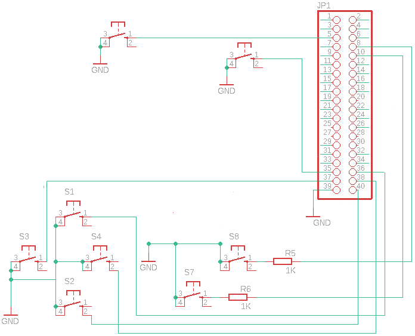

Die Anforderung, dass man mit GPIO-Eingängen eine virtuelle Joypad am System erstellt, ist mit dem Raspberry Pi sehr einfach umzusetzen. Ein paar GPIOs und ein paar Zeilen Python-Code reichen.
Aufgabe
Wenn man mit einem Raspberry Pi alten Konsolen wie Gameboy, NES Emulieren will benötigt man eigentlich ein Joypad oder eine Tastatur. Tasten-Eingaben mit GPIO Eingänge zu erzeugen ist sehr einfach, aber wenn man ein Joypad Emulieren möchte, so geht das nicht ohne einen entsprechendes Programm. Mit Python und uinput kann aber so ein Programm erzeugen. Dann kann man mit 8 Tasten ein virtuelles Joypad erstellen, das kompatibel mit NES bzw. Gameboy Eingaben ist. Dies kann für Game-HATs oder auch Gaming Gehäuse für den Raspberry Pi verwendet werden.
uinput Interface
uinput ist ein Kernelmodul, mit dem Eingabegeräte aus dem Userspace emuliert werden können. Durch Schreiben auf das Gerät /dev/uinput kann ein Programm ein virtuelles Eingabegerät mit bestimmten Funktionen erstellen. Dieses Eingabegerät kann eine Tastatur, Maus oder Joypad bzw. Joystick sein.
Der Zugriff erfolgt bei Python über das uinput Interface (import uinput). So ist die Erstellung eines virtuellen Joypad sehr einfach.
sudo apt-get install python3-uinput
GPIO Schaltplan
Es werden mindestens 8 GPIO-Eingänge benötigt:
- Rauf
- Runter
- Links
- Rechts
- Start
- Select
- A
- B

GPIO Joypad
Das Programm führt folgende Schritte aus:
- Interfaces / Bibliotheken einbinden (GPIO, uinput)
- GPIO-Eingänge konfigurieren
- Joypad Achsen und Tasten anlegen bzw. bekannt geben
- Bei entsprechenden GPIO-Eingang die Achse in X- oder Y-Richtung verschieben
- Bei entsprechenden GPIO-Eingang die Buttons drücken und rücksetzen
|
|
sudo python3 joypad.py &
Wenn der Fehler “OSError: [Errno 19] Failed to open the uinput device: No such device” ausgegeben wird, so ist das uinput Device nicht verfügbar. Dann kann mit “sudo modprobe uinput” das Kernel-Modul geladen werden.
Testen kann man die Funktion mit dem Joystick Testprogramm “jstest”.
sudo apt-get install joystick
jstest /dev/input/js0
Driver version is 2.1.0.
Joystick (python-uinput) has 2 axes (X, Y)
and 4 buttons (BtnA, BtnB, BtnSelect, BtnStart).
Testing ... (interrupt to exit)
Axes: 0: 0 1: 0 Buttons: 0:off 1:off 2:off 3:off
Testen mit Gameboy Emulation
Nun kann man das Joypad im Einsatz mit einer Gameboy Color Emulation testen. Zuerst muss der Emulator Gambatte aber noch kompiliert und installiert werden, da er nicht im Raspbian vorhanden ist. Bei Raspjamming Image ist er bereits vorinstalliert.
git clone https://github.com/sinamas/gambatte
cd gambatte
sudo apt-get install scons libsdl1.2-dev zlib1g-dev
sed -i "2 i\global_cflags = global_cflags + \' -mcpu=arm1176jzf-s -mfloat-abi=hard -mfpu=vfp\'" libgambatte/SConstruct
sed -i "4 i\cflags = cflags + \' -mcpu=arm1176jzf-s -mfloat-abi=hard -mfpu=vfp\'" gambatte_sdl/SConstruct
./build_sdl.sh
sudo mv gambatte_sdl/gambatte_sdl /usr/local/bin/gambatte
Benötigte Laufzeit Bibliotheken:
sudo apt-get install libsdl1.2debian zlib1g
Nun wird noch ein Freeware Gameboy Color Spiel wie z.B. Skoardy benötigt.
wget http://www.skoardy.com/skoardygb.zip
unzip skoardygb.zip Skoardy.gb
rm skoardygb.zip
Die Joypad Tasten müssen beim Gambatte Emulator als Parameter übergeben werden. Dabei gilt:
jsNaM+ … Joystick N axis M +
jsNaM- … Joystick N axis M -
jsNbM … Joystick N button M
-i, –input KEYS Use the 8 given input KEYS for respectively
START SELECT A B UP DOWN LEFT RIGHT
Die Auflösung von 160×144 Pixel kann mit Parameter s auf 320x288 verdoppelt werden, wenn mindestens 640x480 zur Verfügung stehen.
-s, –scale N Scale video output by an integer factor of N
Nun kann Gambatte mit allen Parametern gestartet werden.
gambatte -s 2 -y -i js0b3 js0b2 js0b0 js0b1 js0a1- js0a1+ js0a0- js0a0+ Skoardy.gb &
Youtube Video